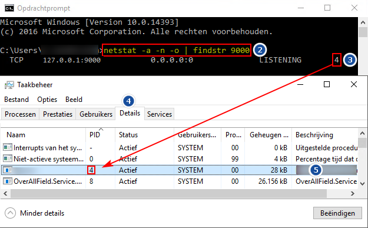

Het is mogelijk dat poort 9000 bezet, door een andere applicatie. Om dit te controleren, doorloopt u de volgende stappen:
- Type <
CMD> in, (bij windows zoeken).- Het Opdrachtpromt scherm verschijnt.
- Type het volgende commando in; <
netstat -a -n -o | findstr 9000>. - In onderstaand voorbeeld is poort 9000, gekoppeld aan PID 4.
- Ga naar Taakbeheer -> tabblad Details

- In de kolom naam/beschrijving is te zien, welke applicatie, gebruikt maakt van deze poort 9000.
Oplossing
Powerall Connect werkt alleen met poort 9000, oplossing:
- Verwijder de 'vreemde' applicatie.
Of - Wijzig de poort van de applicatie.